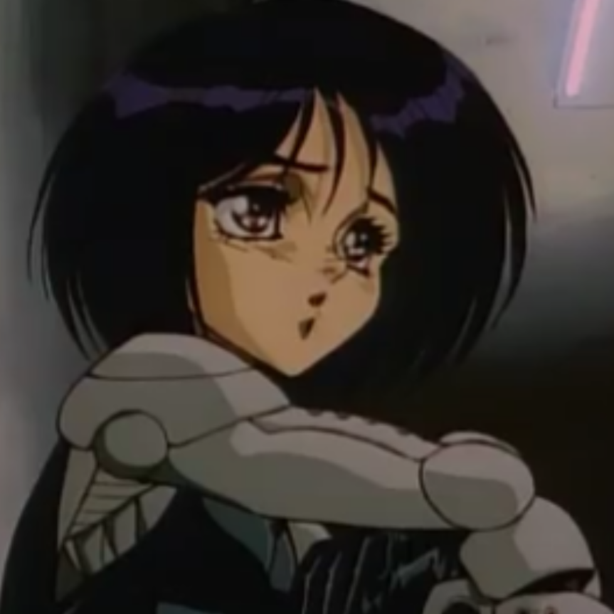
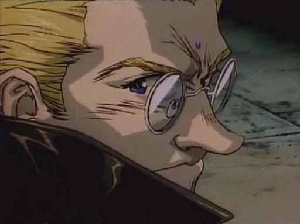
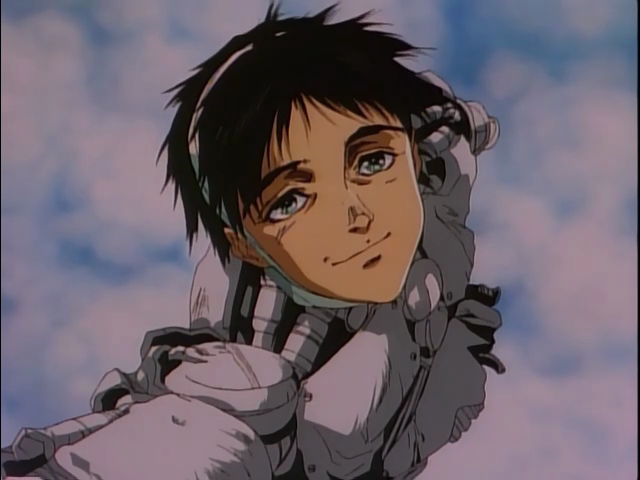
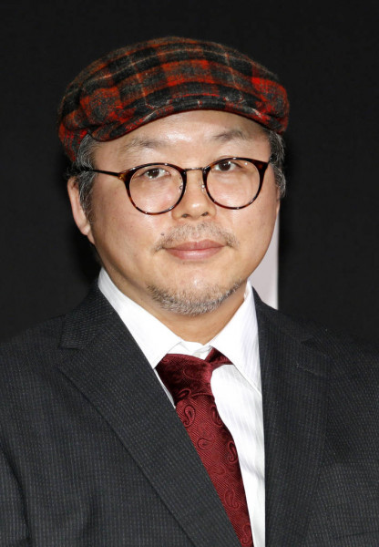
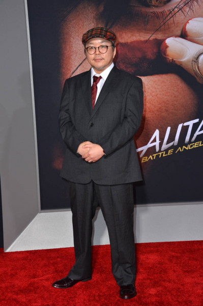
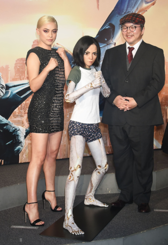

Gally
Aspecto de Gally en el ova de 1997

Ido
Aspecto de Ido en el ova de 1997

Yugo
Aspecto de Yugo en el ova de 1997
Yukito Kishiro: creador de Gunnm
Yukito Kishiro nació el 20 de marzo de 1967 en Tokio, Japón. Es un mangaka japonés, reconocido mundialmente por crear el manga Battle Angel Alita. A los 17 años Kishiro hizo una historia corta llamada "Kikai", que ganó el 15.º Premio Shōgakukan y eso lo abrió al mundo editorial. En 1991 Kishiro creó una de las obras del ámbito cyberpunk que lo llevó a la fama en Japón y en Europa, Alita, ángel de combate, bajo la editorial Shūeisha en la revista Ultra Jump. Contó con dos OVAs en 1993. En 2006 retomó la serie con la saga Battle Angel Alita: Last Order y en 2014 creó otra saga más, Battle Angel Alita: Mars Chronicle.

Sus obras antes de GUNNM
A lo largo de su carrera como mangaka ademas de GUNNM, Yukito a creado varios mangas cortos, entre ellos se encuentran:
- Space Odity (1984)
- The Planet of Depths (1988)
- Fly (1988)
- The Great Machine (1989)
- Future Tokyo Headman (1989)
- Junks: The Space Rovers (1990)
Independientes:
- Ashman (1998)
- Aqua Knight (1998 - presente)
- Mukai: World of Mist (2014)
Debio a problemas de salud y con la editorial con la que hizo sus primeros trabajos, varias de sus obras no fueron serializadas correctamente.

Su estado actual de salud
Al momento de estar escribiendo la primer saga, tuvo que dejar el comic en pausa debido a problemas de salud, este problema lo sigue llevando hoy dia, haciendo que en varias ocasiones deba tomarse varios descansos antes de seguir con MARS CHRONICLE, aun asi a logrado participar en proyectos importantes de la obra, una adaptacion en OVA (muy mala) y un videojuego llamado Gunnm: Martian Memory para Playstation.
